Mariage
Couverture complète de la journée, reportage discret, portraits de couple et famille.
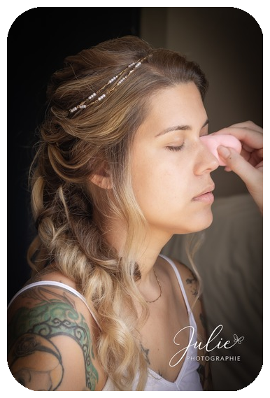
Capturer des instants lumineux et authentiques
Je suis Julie, photographe passionnée spécialisée dans les mariages, les couples et les portraits de famille. Mon approche est discrète, sincère et artistique — je cherche à capturer l'émotion pure de chaque instant.
Basée en région, je me déplace pour immortaliser vos plus beaux souvenirs, naturels et lumineux.
Une sélection plus large pour consultation et démonstration du style photographique.
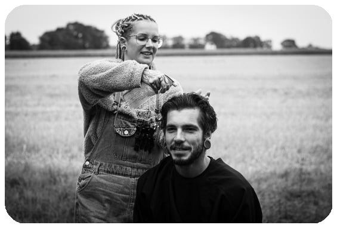
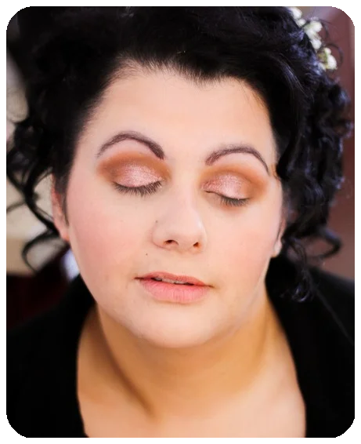
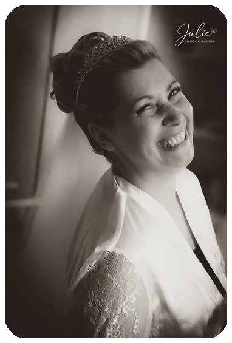
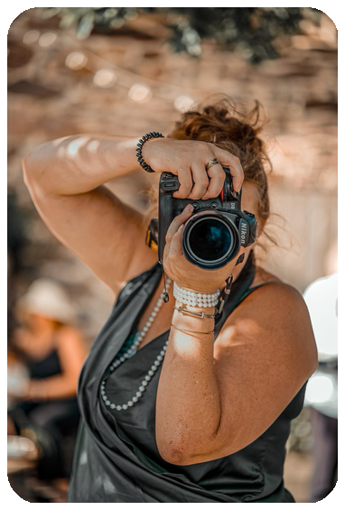
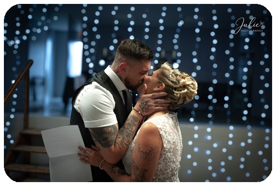
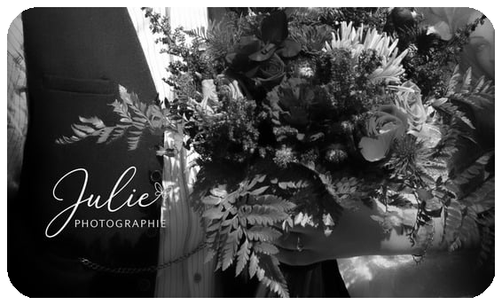
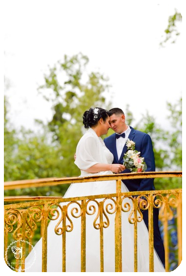
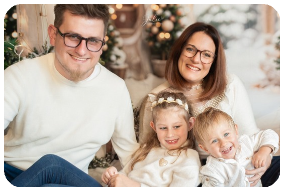
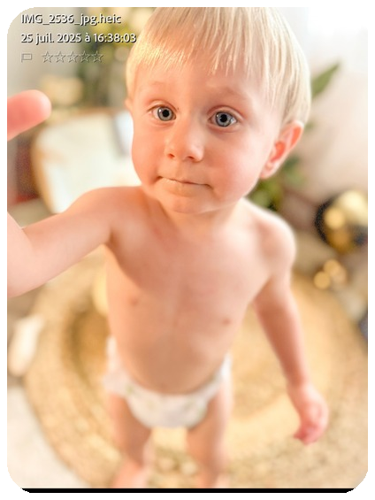
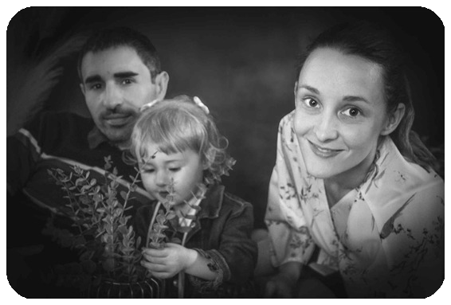
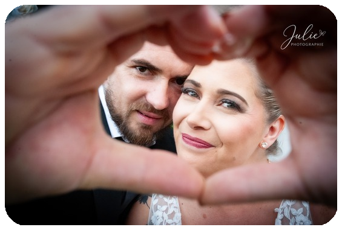
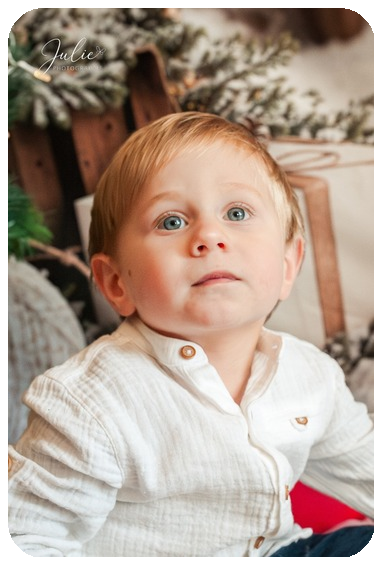
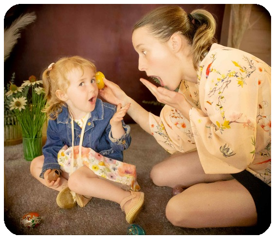
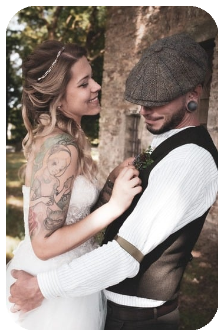
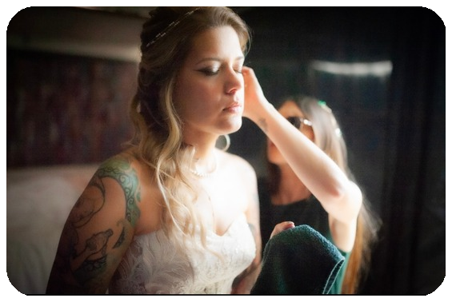
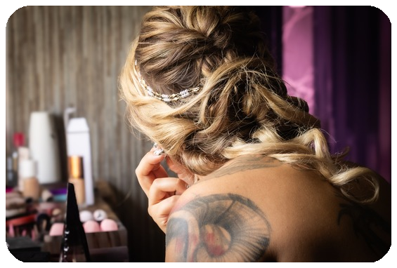
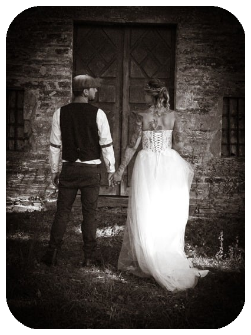
Couverture complète de la journée, reportage discret, portraits de couple et famille.
Séances engagement, sorties photos en extérieur ou en studio, book couple.
Séances bébé, nouveau-né, portraits de famille et portraits individuels.
Un jour, l’appareil photo est devenu plus qu’un outil : il est devenu une manière de raconter, de capturer ce qui ne se dit pas toujours avec des mots un regard, une complicité, une émotion furtive. Ce que j’avais cherché à protéger ou à comprendre dans mes anciennes missions, j'ai commencé à le sublimer à travers l’image. C’est ainsi qu’est née Julie Photographie : une envie profonde de créer des souvenirs vrais, lumineux, naturels, qui ressemblent pleinement aux personnes que je photographie.
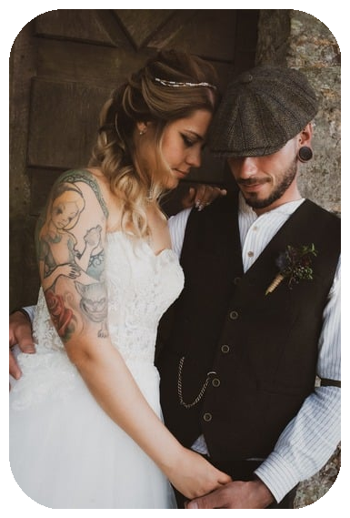
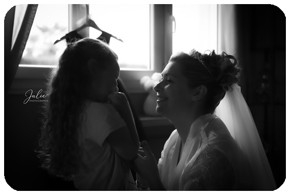
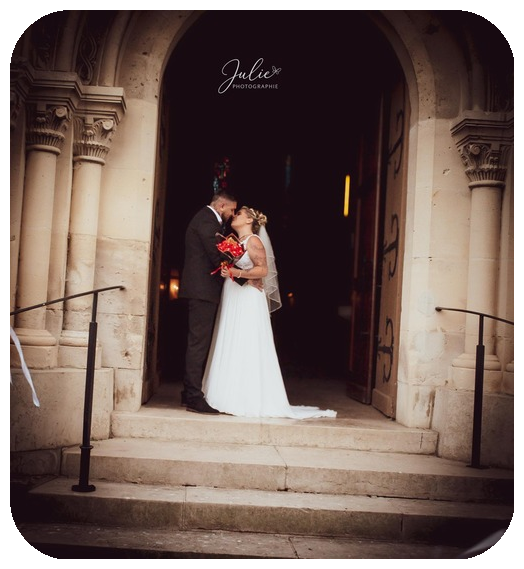
Sessions famille et portraits — moments naturels et complices. Collage d'exemples ci-contre.
"Julie a su capturer chaque émotion de notre journée avec délicatesse. Les photos sont sublimes et racontent une histoire."
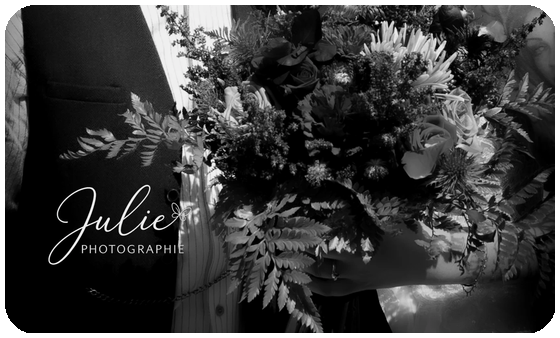
"Photographe très sérieuse. Julie à su immortaliser à la perfection mon travail lors d'une prestation maquillage de mariée !"
Le délai standard est de 4 à 6 semaines selon la saison et la quantité de photos.
Oui, retouches couleur, nettoyage de peau et retouches avancées disponibles sur demande.